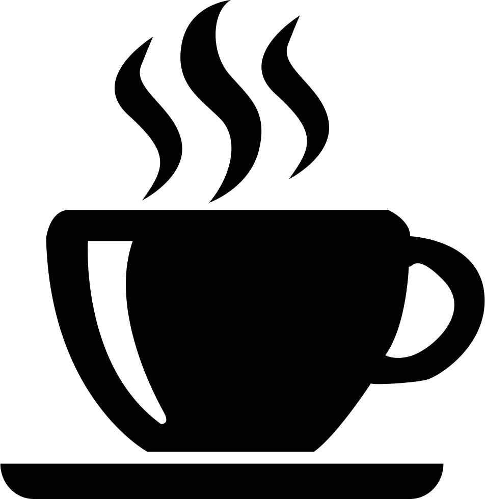

Cliente
Comparação Café Arábica x Café Robusta nos Estados em 2017
Tipo mais Produzido
Café Arábica
42/ 78 (t)
53.85% Produzida
Tipo menos Produzido
Café Robusta
36 / 78 (t)
46.15% Produzida
Recomendação
De acordo com sua plantação do estado de %ESTADO% que produziu um total de %DOUBLE% toneladas de café, podemos notar que se comparada com a produção do estado %ESTADO%, há uma diferença de %X_POR_CENTO% de produção, o que indica que o estado %ESTADO% está mais apto para o plantio de café!
Indicador da Saca
Análise de preço da Safra dos Cafés (2017)
| Março/17 | (R$/saca(60 Kg)) |
|---|---|
|

Arábica |
R$ 40,00 - 60,00 |
|
Arábica |
R$ 40,00 - 60,00 |